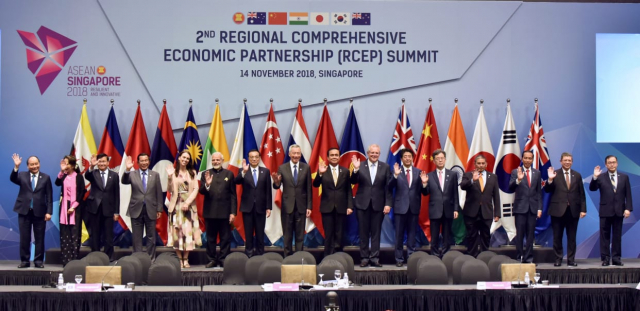
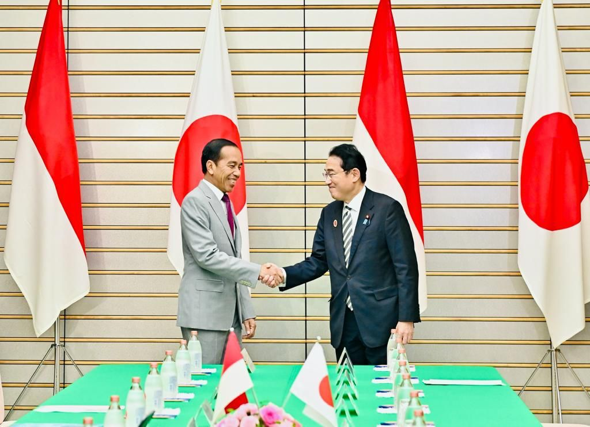
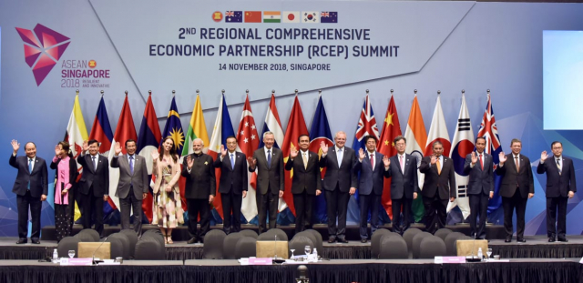
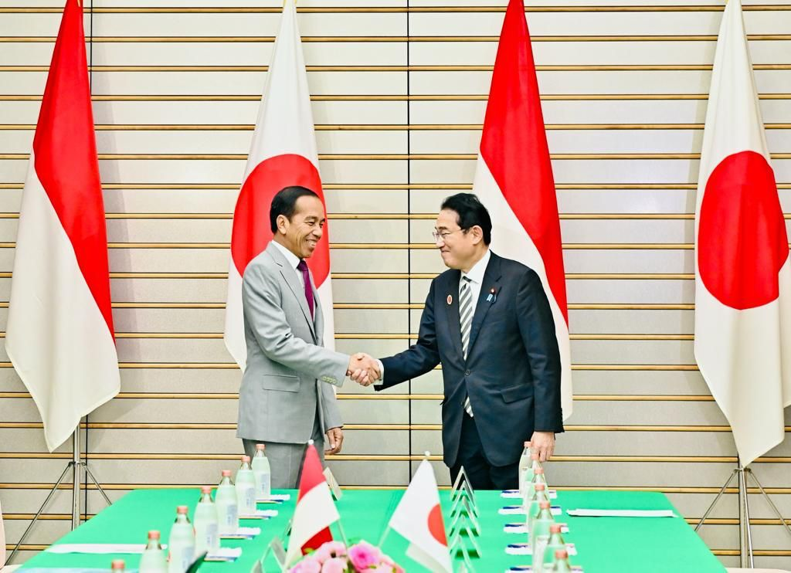

Kerjasama Indonesia dengan negara lain sangat penting untuk mewujudkan SDGs (Sustainable Development Goals). Kerjasama ini dapat mempererat hubungan antarnegara dan memberikan banyak manfaat. Setelah mengerjakan tugas ini, saya menyadari bahwa dengan adanya kerjasama internasional secara bilateral, regional, dan multilateral, Indonesia dapat lebih mudah mengatasi tantangan global. Seperti perubahan iklim, kemiskinan, dan kesenjangan sosial. Misalnya, kerjasama Indonesia dengan negara-negara maju seperti Jerman dan Jepang dalam bidang infrastruktur dan teknologi, tidak hanya mempererat hubungan antarnegara, tetapi juga berkontribusi dalam mewujudkan SDGs, khususnya Tujuan 9 SDGs yang berkaitan dengan Infrastruktur, Industri, dan Inovasi.
Dari tugas website IL Kecil yang menghubungkan mata pelajaran, IPS, PPKN, dan TIK. Saya mempelajari banyak hal. Saya sebagai pelajar di SMP Santa Ursula Jakarta, harus mengajak teman-teman untuk memunculkan rasa ingin mewujudkan tujuan SDGs. Dengan tindakan sederhana serta mengajak dan mengedukasi teman-teman saya mengenai keberlanjutan. Melalui kerjasama dan hubungan yang erat dapat berkontribusi dalam menciptakan dunia yang lebih inovatif, berkualitas, dan berkelanjutan.
Dari membuat website ini, saya banyak belajar dan memahami mengenai SDGs. SDGs sangat penting yang berpengaruh dalam memperbaiki tantangan dan isu global. Terutama dengan tujuan ke-9 SDGs yang saya memih. Tujuan ke-9 yaitu Infrastruktur, Industri, dan Inovasi sangat penting bagi masa depan Indonesia, karena berfokus pada pembangunan infrastruktur yang berkualitas dan mendorong inovasi yang berkelanjutan. Melalui pembangunan industri yang ramah lingkungan, Indonesia dapat mencapai pertumbuhan ekonomi yang inklusif dan berkelanjutan. Hal ini sangat penting, karena hanya dengan adanya infrastruktur yang kuat dan berinovasi, kita dapat menghadapi tantangan global yang semakin banyak.
Website yang saya membuat ini juga membuat saya mengerti dan memahami koding lebih lanjut. Dengan tugas ini saya dapat membuat website yang berguna, bermanfaat, dan dapat mengajarkan teman-teman mengenai seberapa pentingnya kerjasama internasional bagi Indonesia serta kebijakan-kebijakan yang dilakukan untuk mencapai tujuan SDGs pada tahun 2030.